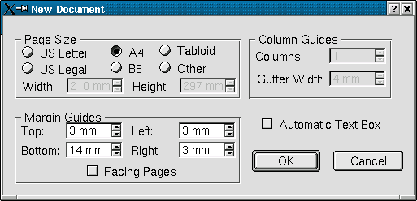
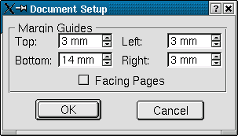

3.1 Allgemeines
Der Menüpunkt File/New erstellt ein neues Scribus-Dokument. Im folgenden Dialogfeld haben Sie die Möglichkeit,
die Seitengröße, die Seitenränder sowie eventuell automatisch eine Textbox erzeugen zu lassen:

Unter "Columns Guide" können Sie hier eingeben, ob die Textbox in mehreren Spalten die Seite einnehmen soll.
Auch eine nachträgliche Änderung der Einstellungen ist über den Menüpunkt "File/Document Setup" möglich:
